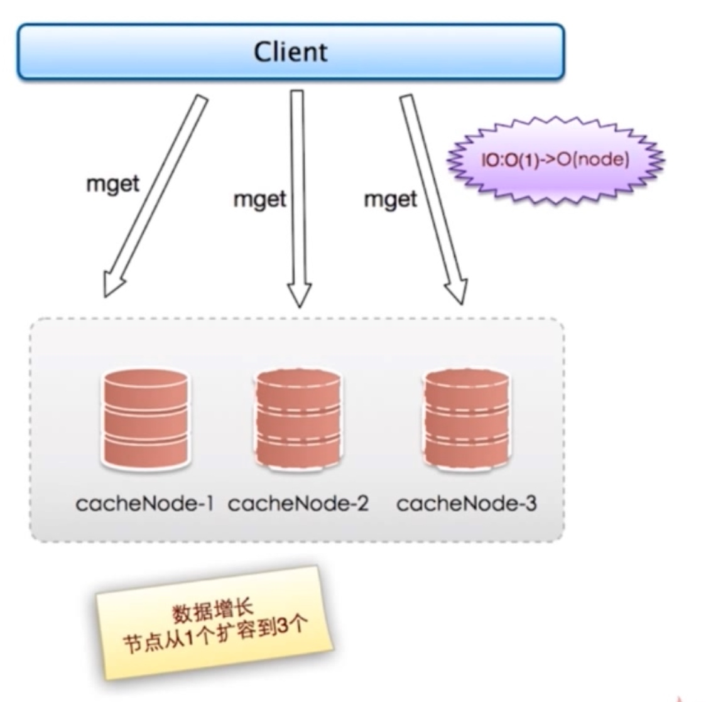
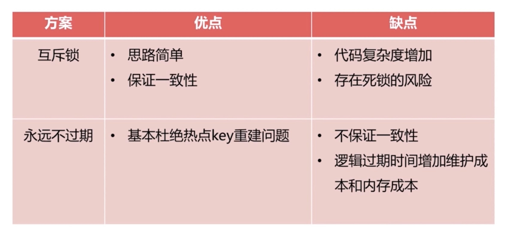

缓存的使用和设计
- 缓存的受益与成本
- 无底洞问题优化
- 缓存更新策略
- 缓存雪崩优化
- 缓存粒度控制
- 热点key重建优化
- 缓存穿透优化
缓存的收益与成本
收益
- 加速读写
通过缓存加速读写速度: CPUL1/L2/L3 Cache、Linux page Cache 加速硬盘读写、浏览器缓存、Ehcache 存数据库结果。 - 降低后端负载
后端服务器通过前端缓存降低负载：业务端使用 Redisp 降低后端 MYSQLF 负载
成本
- 数据不一致：缓存层和数据层有时间窗口不一致，和更新策略有关
- 代码维护成本：多了一层缓存逻辑。
- 运维成本：例如 Redis Cluster
使用场景
- 降低后端负载
- 对高消耗的 SQL: join结果集/分组统计结果缓存。
- 加速请求响应
- 利用 Redis/ Memcache 优 IO 响应时间
- 大量写合并为批量写
- 如如计数器先 Redisg 累加再批量写 DB
缓存更新策略
- LRU/LFU/FIFO算法剔除:例如 maxmemory-policy
- 超时剔除：例如 expire。
- 主动更新：开发控制生命周期
- 对比

建议
- 低一致性 最大内存和淘汰策略
- 高一致性：超时剔别除和主动更新结合，最大内存和淘汏策略兜底。
缓存粒度控制
- 通用性：全量属性更好。
- 占用空间：部分属性更好
- 代码维护：表面上全量属性更好。
缓存穿透问题

- 业务代码自身问题
- 恶意攻击、爬虫等等
如何发现
- 业务的相应时间
- 业务本身问题
- 相关指标：总调用数、绶存层命中数、存储层命中数
如何解决
- 缓存空对象

- 需要更多的键，设置过期时间
- 缓存层和存储层数据短期不一致 订阅消息刷新缓存
- 布隆过滤器

- 比较固定的数据适合
- 布隆过滤器可以实时更新
缓存雪崩
- 由于 cache 服务承载大量请求，当 cache服务异常/脱机,流量直接压向后端组件（例如 DB），造成级联故障。

- 保证缓存高可用
- 个别节点个别机器个别机房
- 依赖隔离组件为后端限流
- 提前演练
Cache服务高可用
- sentinel

- 主从漂移

- 隔离组件 线程池/信号量

无底洞问题
- http://highscalability.com/blog/2009/10/26/facebooks-memcached-multiget-hole-more-machines-more-capacit.html
- 
- 更多的机器！=更高的性能
- 批量接口需求（mget, mset 等
- 数据增长与水平扩展需求
优化IO
- 命令本身优化：例如慢查询 keys、hgetall bigkey
- 减少网络通信次数
- 降低接入成本: 例如客户端长连接/连接池、NIO 等
热点key重建优化

三个目标
- 减少重缓存的次数
- 数据尽可能一致
- 减少潜在危险
解决
- 互斥锁（mutex key）没有大量重建
- 永远不过期

- 功能层面：为每个 value 添加逻辑过期时间，但发现超过逻辑过期时间后，会使用单独的线程去构建缓存。
- 对比
- 
总结


unique_ptr
概述
- 独占式的，专属所有权，同一时刻，只能有一个unique_ptr指针指向这块对象
- 当这个unique_ptr被销毁的时候，它所指向的对象也被销毁
make_unique
- c++14才有
- 不支持指定的删除器语法
不支持的操作
- unique_ptr
ps1(new string("I love China")); - unique_ptr
ps2(ps1) - 拷贝，赋值
移动语义
- unique_ptr
ps5 = std::move(pi3);
release()
- 放弃指针控制权，返回裸指针，将该指针置空
- 裸指针可以释放，可以delete, 也可以初始化另外的智能指针
- 直接release会导致内存泄露
- int* tmp = p5.release();
- delete tmp
reset
- 不带参数，释放智能指针所指向的对象，并且将智能指针置为空
- 带参数 释放智能指针所指向的对象，并且将智能指针指向新对象
- pi2.reset(p5.release());
nullptr
- 释放智能指针指向的对象，并将智能指针置空
指向数组
- unique_ptr ptr(new A[10]) A没有析构函数，正常
- 有析构函数，会导致异常
get()
- 有些函数的参数需要内置的裸指针
- get的指针千万不要delete
swap
- 交换智能指针指向的对象
智能指针作为判断条件
- if (ptr)
转换为shared_ptr
- shared_ptr有个显式的构造函数。用于将shared_ptr转换为unique_ptr
- 临时对象都是右值
- unique_ptr没有控制块


Copyright © 2015 Powered by MWeb, Theme used GitHub CSS.